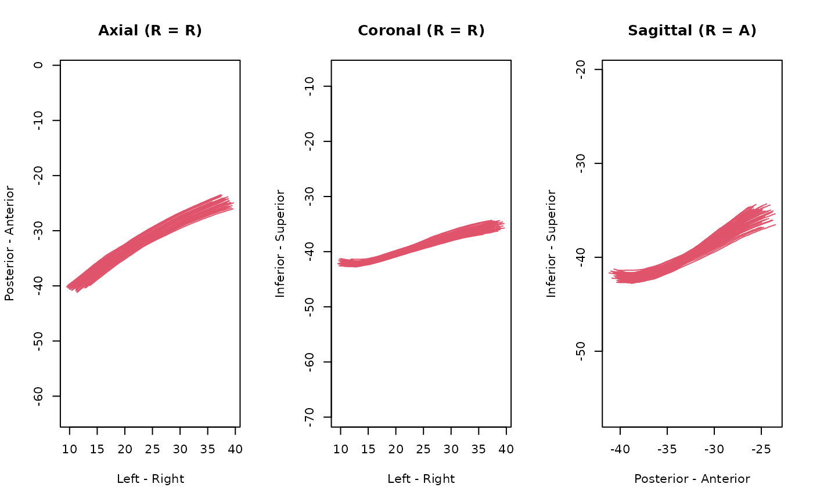

Low-level functions; for high-level functions,
please use read_streamlines or
as_ieegio_streamlines instead.
Low-level functions, supports compressed files; for high-level functions,
please use read_streamlines or
as_ieegio_streamlines instead.
Usage
io_read_tck(file)
io_write_tck(
x,
con,
datatype = c("Float32LE", "Float32BE", "Float64LE", "Float64BE")
)
io_read_trk(file, half_voxel_offset = TRUE)
io_write_trk(x, con, half_voxel_offset = NA)Arguments
- file, con
file path to the streamline file
- x
imaging-streamlinesinstance- datatype
data storage type to write, default is
'Float32LE', 4-byte little 'endian' float; other choices are'Float32BE','Float64LE', and'Float64BE'- half_voxel_offset
whether to add 0.5 millimeter shift on each side, default is
TRUE. See 'Details' for explanation.
Value
io_read_tck returns a ieegio streamline object,
io_write_tck returns the connection or file path.
io_read_trk returns an imaging-streamlines
instance.
Details
'TRK' gains popularity due to its ability to store streamline attributes.
However, this file format suffer from ambiguous definition in the initial
'TrackVis' implementation. Typically in a medical image file, there
might exists a 4-by-4 matrix that maps the volume indices to the
corresponding anatomical right-anterior-superior 'RAS' locations.
However, the original definition of 'TRK' does not have this. Since
version 2, 'TRK' introduced such matrix, but it was interpreted
differently. Instead of the volume index space, the source space is conformed
1 millimeter space, with the origin at the first 'voxel' corner instead of
the center. Therefore there is a 0.5 mm shift at each direction, and
half_voxel_offset is designed to offset this shift.
What has made this issue complicated was that some software, such as
'DSI-studio', seemed to ignore that offset when converting from their
own format to the 'TRK' format. If the file is generated in such
way, please set half_voxel_offset=FALSE to turn off the offset
correction. We always recommend that user store data in 'TCK' format.
Examples
# run `ieegio_sample_data("streamlines/CNVII_R.tck")` to
# download sample data
if( ieegio_sample_data("streamlines/CNVII_R.tck", test = TRUE) ) {
path <- ieegio_sample_data("streamlines/CNVII_R.tck")
# Read
streamlines <- io_read_tck(path)
plot(streamlines)
# write
tfile <- tempfile(fileext = ".tck")
io_write_tck(streamlines, tfile, datatype = streamlines$header$datatype)
# verify two files are identical
digest::digest(file = tfile) == digest::digest(file = path)
unlink(tfile)
}

# This example uses sample data, run
# `ieegio_sample_data("streamlines/CNVII_R.trk")` to download
if( ieegio_sample_data("streamlines/CNVII_R.trk", test = TRUE) ) {
path <- ieegio_sample_data("streamlines/CNVII_R.trk")
tfile <- tempfile(fileext = ".trk")
# read
x <- io_read_trk(path)
# write
io_write_trk(x, tfile)
# compare two files
file.size(path) == file.size(tfile)
src_raw <- readBin(path, "raw", n = file.size(path))
dst_raw <- readBin(tfile, "raw", n = file.size(tfile))
equal_raw <- src_raw == dst_raw
# Some reserved information are removed
all(equal_raw[-c(945:947)])
unlink(tfile)
}